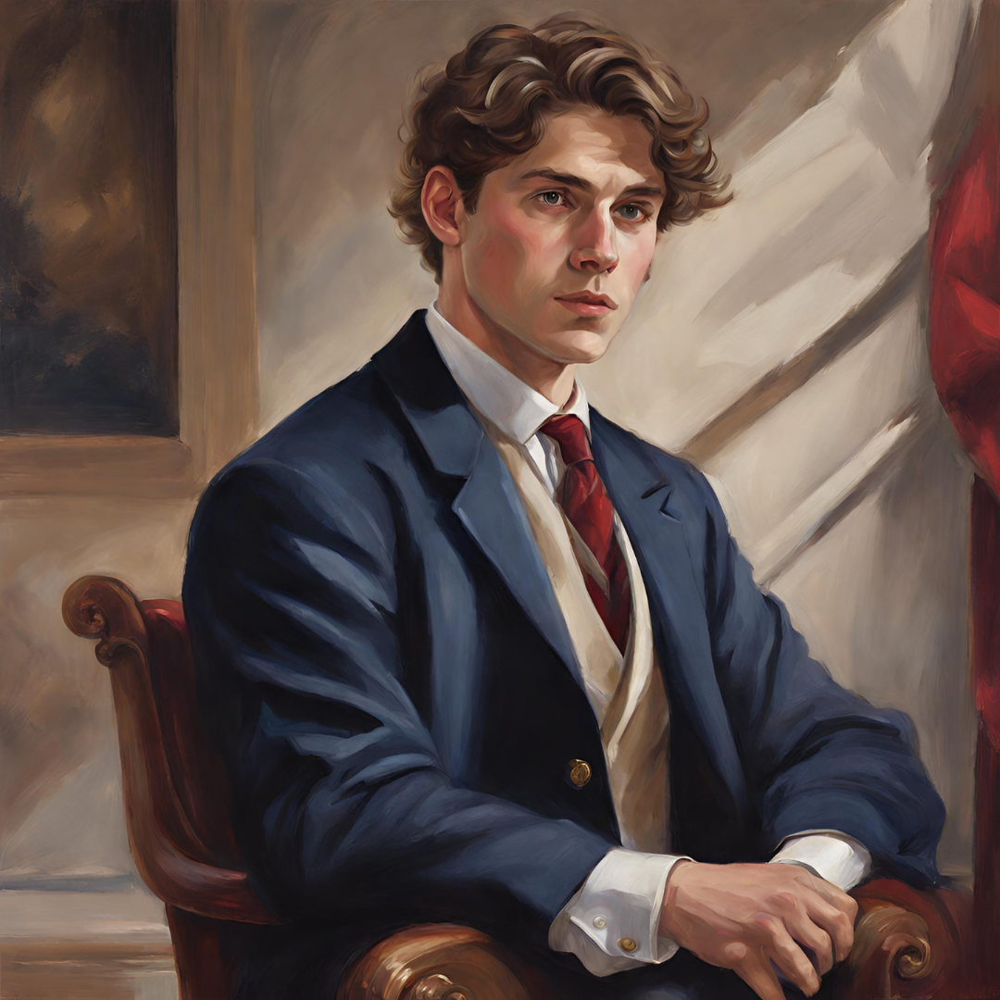
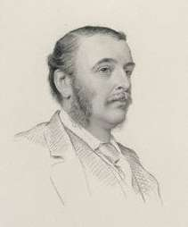
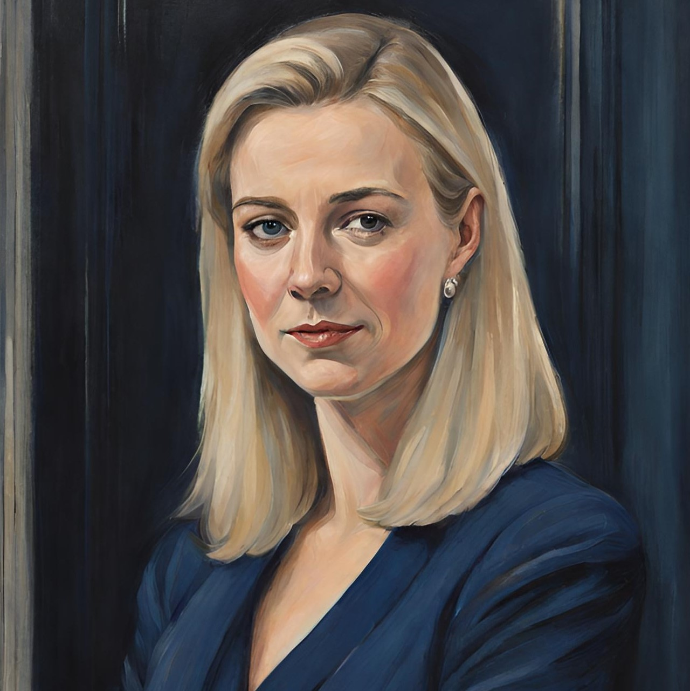

William
Elio Scott Chester Somerset, 2nd Viscount Douglas (formerly William Scott-Chester) is the son of His
Royal Highness the Prince of Wales, and former Prime Minister of the Empire of Great Britain.
He has served in 6 parliamentary terms, and has held various roles from Downing Street Chief of Staff to Foreign Secretary.
As Prime Minister, he successfully abolished the Address-in-Reply, delivered the Economic Freeze to allow for a greater review of regional economic function, supported a constitutional rework, and promoted regional culture through events and engagement opportunities.
He has served in 6 parliamentary terms, and has held various roles from Downing Street Chief of Staff to Foreign Secretary.
As Prime Minister, he successfully abolished the Address-in-Reply, delivered the Economic Freeze to allow for a greater review of regional economic function, supported a constitutional rework, and promoted regional culture through events and engagement opportunities.

Thomas Humphrey Carew (formerly Thomas Wright) has been a Member of the Empire since
May of 2023, and in that time has served as Home Secretary and a faithful Member of the Herons. He has been
a promoter of Unity and Stability, both in Government and in the wider Region.
Having served now for two consecutive terms as Home Secretary, Thomas Carew brings a wealth of public initiatives and engagement to the table, such as with his continued support for ideas such as the Racing League, Citizen of the Month, and the Mousing Department.
Having served now for two consecutive terms as Home Secretary, Thomas Carew brings a wealth of public initiatives and engagement to the table, such as with his continued support for ideas such as the Racing League, Citizen of the Month, and the Mousing Department.

Owain Wentworth Grey arrived to the Empire in October 2023, being a vocal member of
the community ever since. He has served as MP for Argyll and Bute in the 29th session and is the current
communications secretary to the Prince of Wales.
During his time in Parliament he authored and co-authored multiple bills. Including the Bus Nationalisation Act, which modernised the Bus system across the empire.
During his time in Parliament he authored and co-authored multiple bills. Including the Bus Nationalisation Act, which modernised the Bus system across the empire.

Josephine Mary Anne Grey is a British jurist, military officer, and politician who
currently serves as a Senior Officer of the Royal Air Force, Barrister of the Royal Court of Justice, and
Leader of the British Constitutionalist & Unionist Party. Having served extensively in another life,
since her return, she has distinguished herself in advocating for the rights of British citizens and the
central role of the British economy.
In her free time, she shoots and hunts at Grey House in Byfleet, Surrey, and spends time with her only son, Owain, and their horde of cats and dogs.
In her free time, she shoots and hunts at Grey House in Byfleet, Surrey, and spends time with her only son, Owain, and their horde of cats and dogs.